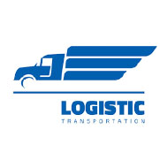

PROFTAAK
TRUCKERDIRECT
INSPIRATIEFASE
INSPIRATEFASE
Voor het ontwerpen van het logo heb ik in eerste instantie een lijst gemaakt van woorden die verband houden met truckers en vrachtvervoer. Daarna ben ik op zoek gegaan naar logo's van andere transportbedrijven om daaruit inspiratie te halen. Hierbij viel het me op dat vrachtwagens vaak werden gebruikt, waardoor ik al snel besloot om een andere benadering te kiezen. Tevens ben ik op zoek gegaan naar websites die niet alleen gericht waren op transport, maar ook op het snel verzenden van goederen in bredere zin. Daarnaast stuitte ik toevallig op een ontwerp via mijn Instagram-feed dat me aansprak vanwege de kleurencombinatie, en dit heb ik ook meegenomen in mijn overwegingen.
WOORDEN
Truckerdirect Iets met een pijl net zoals fedex
Iets met een vrachtwagen Iets vrolijk met een vrachtwagen
Pet truck en een pijl TRUCKER DIRECT Weg Kentekenbord Stuur
LOGO ONDERZOEK
In eerste instantie ben ik op zoek gegaan naar voorbeelden van logo's die aansloten bij de woorden die ik had opgeschreven. Het viel me op dat veel van deze logo's veel op elkaar leken. Hieronder vind je een selectie van enkele voorbeelden.
LOGO's

VERSCHILLENDE SITES
Analyseer een aangereikte voor gestructureerde design challenge en doelgroep door een debriefing te maken.
1. De eerste site heb ik gevonden via INSTAGRAM. Dit design vond ik sterk vanwege de kleuren die een sterk contrast geven. Ook is het duidelijk op elke pagina waar die voor doelt.
2. De tweede is de UBER website. Waarom ik daar inspiratie in vond is vanwege acties die de gebruiker moet uitvoeren om het eten op de juiste bestemming te krijgen. Het is ook net anders gedaan en het leek me een uitdaging om met deze functie te experimenteren.